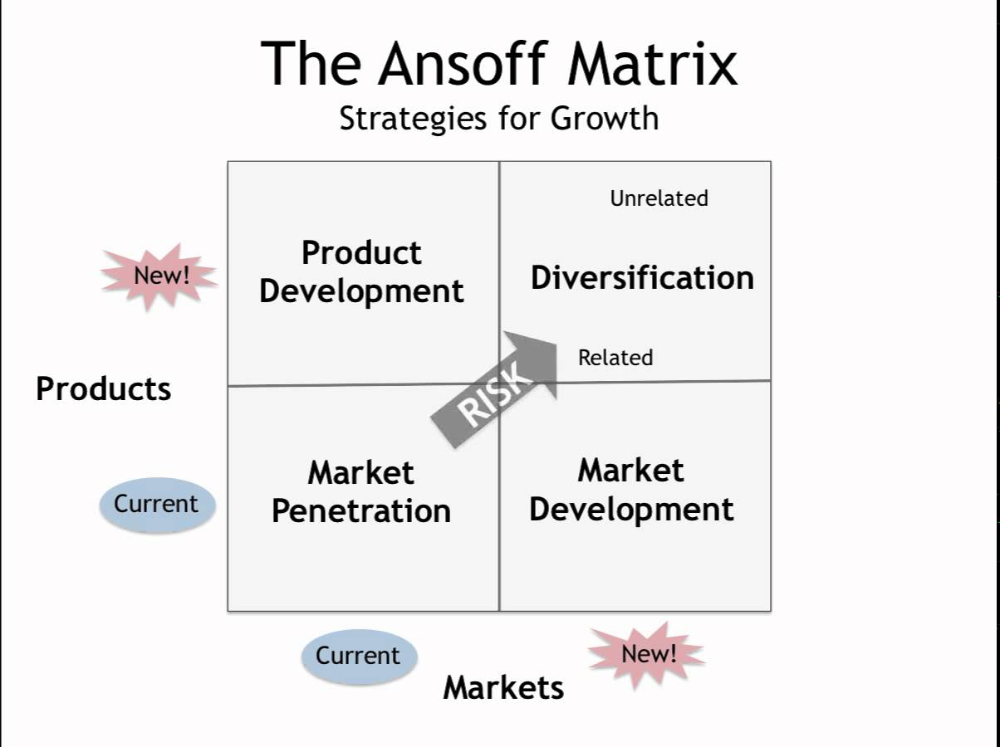
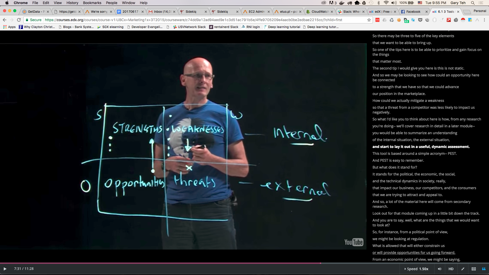

I've been reflecting on how to expand distribution approaches for our DAO, and it struck me—growing something as decentralized and fluid as a DAO requires a careful balance. How do we scale without losing our footing?
I turned to a classic framework, the Ansoff Marketing Model from a 1957 Harvard Business Review article, and found it surprisingly relevant for our context.
It's not about chasing growth blindly—it's about aligning with our strengths and avoiding potential pitfalls. Let me share my analysis, from the model itself to the unique characteristics of our DAO, and how we might navigate this complex landscape.
The Ansoff Model: Old School, But Still Sharp
For those unfamiliar, the Ansoff Model is a 2x2 grid that categorizes growth strategies into four areas: Market Penetration, Market Development, Product Development, and Diversification. (For a deeper dive, see here or the original 1957 paper here.)

At its core, it's about deciding whether to focus on familiar territory or explore new markets and products—or both.
After assessing our DAO's inherent strengths and weaknesses, I've prioritized the strategies as follows:
- Market Penetration first—focus on existing markets with our current offerings.
- Then Market Development—extend our current offerings into new regions.
- Next, Product Development—refine or expand our offerings for existing markets.
- Finally, Diversification—the riskiest option, combining new products with new markets.
This sequence makes sense because it builds on what we know while gradually expanding our reach. Let's explore this further through a SWOT analysis of our DAO (more on SWOT here).

Our DAO's Superpower: Discovery
One area where our DAO excels is discovery. We have a unique ability to connect with remote, lesser-known regions, gather insights across diverse landscapes, and engage with new domains and market verticals.
We also have access to spare capacity among members that often goes underutilized. My view is that we should map our activities to the resources we already have, rather than seeking new resources for ambitious plans.
Additionally, with minimal fixed operating overheads, we remain agile—able to adapt without heavy constraints.
Another strength that's become evident over time is our ability to build social capital. DAOs seem to naturally foster trust and connections in ways traditional structures often can't. A great example of this in action is True Sight DAO, where community-driven insight and collaboration create powerful networks. This intangible asset is powerful—but how do we use it effectively?
Our Kryptonite: Reliability and Tight Coordination
On the other hand, we face limitations that could hinder us if not addressed. A primary weakness is the lack of consistent availability or reliability of critical resources when needed.
The "just-in-time" approach common in manufacturing doesn't suit us—we're not built for that kind of precision. Initiatives requiring tightly coordinated efforts or strict critical paths are likely to falter.
Our approach must prioritize flexibility over rigid execution to work around this constraint.
The World Around Us: Opportunities and Threats
Looking at the broader environment, there are significant opportunities to seize:
- Post-COVID shifts in consumer demand have created structural gaps that large brands haven't yet filled, constrained by their existing supply chains.
- Climate change is raising awareness and altering consumer preferences, opening another market gap.
- The AI revolution offers immense potential, automating parts of our critical path that once required human effort, allowing us to redirect focus.
Yet, challenges persist. Key threats include:
- Uncertainty around U.S. tariffs and geopolitical tensions that could disrupt plans.
- AI-driven job displacement potentially reducing consumer spending power and shrinking markets.
- Climate change impacting supply availability.
- In niches like cacao, manufacturers moving away from certain ingredients could reduce demand.
- The EU Deforestation Regulation (EUDR) is shifting demand from African to Latin American supply, which might price us out or erode our differentiation.
- Additionally, European purchases of large agroforestry lands could limit our access to key markets.
Navigating this mix of opportunities and risks requires caution and strategic focus.
Key Observation: Turning Logistics into Psychology
A recurring thought is how to address the logistical challenges of growth without being held back by our limitations.
The solution may lie in reframing logistics as a psychological challenge. It's about leveraging social capital through social proofing mechanisms.
Consider this as a strategic game board—identifying the critical starting points to influence first, so the broader landscape shifts in our favor. Which connections or stakeholders do we prioritize to set the stage for success?
This perspective draws inspiration from game theory, particularly the strategic thinking around Reversi (also known as Othello). As explored in Professor Kevin Lu's analysis of the game theory of Reversi, controlling the corner pieces is often the key to dominating the board. In Reversi, corner positions are stable—once captured, they cannot be flipped by the opponent, making them strategic anchors for the entire game.
Picture this like an Othello board—what are the corner pieces we need to flip first so the rest of the board naturally follows? Who do we influence, what connections do we activate, to make the lay of the land work in our favor?
I'm still chewing on this, but it feels like the right direction.
Reflections for the Day
Aligning our DAO's growth with the Ansoff Model isn't merely about selecting a strategy—it's about staying true to our identity. We're explorers, not mechanized operators.
We must capitalize on discovery, flexibility, and social capital while avoiding rigid, resource-intensive commitments.
The world is evolving rapidly, with AI, climate shifts, and geopolitical dynamics presenting both obstacles and openings. If we remain adaptable, these changes can work to our advantage.
What's your take? How can DAOs approach growth amidst a landscape of opportunity and risk? Are there strategic starting points you'd prioritize to shift the broader picture? I'm curious to hear your insights.